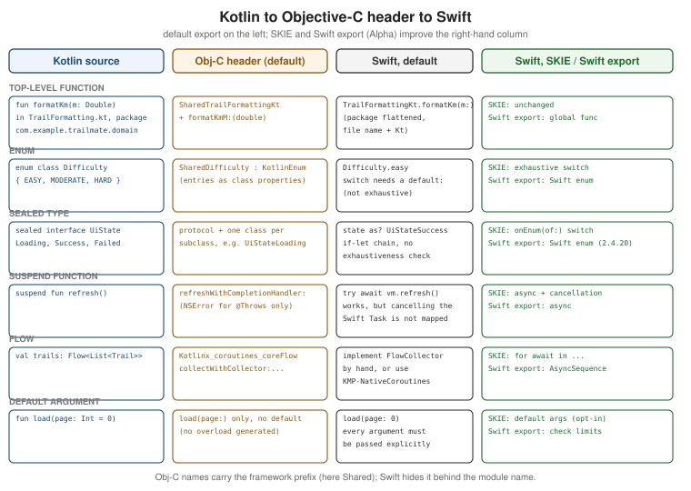

Objective-C Interop, Swift Export and SKIE
|
This content was generated with the assistance of AI and should be verified against the official documentation before being relied on in production. |
Swift cannot call Kotlin directly. The Kotlin/Native compiler produces a framework whose public API is described by
an Objective-C header, and Swift imports that header like any other Objective-C library. Everything you write in
commonMain and iosMain reaches your iOS developers through that translation, so its rules decide whether the
shared module feels like a native Swift package or like a foreign library full of KotlinInt boxes and missing
switch exhaustiveness. This page explains the translation, the annotations that tune it, the cost of exporting
more than you need, and the two ways to leave the Objective-C layer behind: SKIE (a third-party Swift-focused
compiler plugin) and Swift export (JetBrains' direct Kotlin-to-Swift path).
The page targets the section baseline: Kotlin 2.4.20, Xcode 26.4, SKIE 0.10.15 and
KMP-NativeCoroutines 1.0.6. Stability levels matter here. Exporting Kotlin to Objective-C is a long-standing
feature, but several of the annotations below are Experimental and need an opt-in. Swift export is Alpha, and
importing Swift packages into Kotlin (SwiftPM import) is Alpha as well. Importing Objective-C and C libraries
into Kotlin (the opposite direction) is Beta. SKIE and KMP-NativeCoroutines are third-party tools with their own
release cadence and Kotlin compatibility ranges. Examples are slices of the running example, TrailMate Everywhere
(package com.example.trailmate), introduced in
What Kotlin Multiplatform Is and When to Use It.
This page does not re-teach Kotlin or SwiftUI. See
Kotlin for Swift Developers for the language mapping,
Integrating Shared Code into iOS for Xcode wiring,
Consuming Coroutines and Flow from Swift and SwiftUI
for suspend and Flow in SwiftUI, and Language Interoperability
for the Apple side of the Objective-C bridge.
The Big Picture
The figure shows the same six Kotlin declarations as the Objective-C header describes them, as Swift sees them by default, and as Swift sees them when SKIE or Swift export is in play.

Three consequences follow. The header is the contract: whatever Objective-C cannot express (generic functions,
default arguments, exhaustive sealed hierarchies, Flow) is degraded, erased or omitted. Every public declaration
costs binary and header size. And SKIE sits on top of the header while Swift export replaces it, so they are
alternatives, not layers to stack.
How Kotlin Looks Through the Objective-C Header
The following Kotlin slice is used throughout this section. It is deliberately ordinary shared code, not code written for iOS.
// sharedLogic/src/commonMain/kotlin/com/example/trailmate/domain/Trail.kt
package com.example.trailmate.domain
enum class Difficulty { EASY, MODERATE, HARD }
data class Trail(
val id: String,
val name: String,
val lengthKm: Double,
val difficulty: Difficulty,
val photoUrl: String?,
)// sharedLogic/src/commonMain/kotlin/com/example/trailmate/presentation/TrailListUiState.kt
package com.example.trailmate.presentation
import com.example.trailmate.domain.Trail
sealed interface TrailListUiState {
data object Loading : TrailListUiState
data class Success(val trails: List<Trail>) : TrailListUiState
data class Failed(val message: String) : TrailListUiState
}Names, Prefixes and Name Clashes
Objective-C has no namespaces. Kotlin/Native therefore prefixes every exported class with the framework’s
baseName (for example SharedTrail) in the header, and Swift removes the prefix again because the framework is a
module: in Swift you write Trail, and import Shared provides it.
Two Kotlin classes called Trail in different packages cannot both be SharedTrail. The compiler disambiguates them
with a suffix (an underscore, for example Trail_), which makes the second one awkward to use. Likewise, Kotlin
members whose names clash after translation (for example overloads that differ only in a parameter type that erases
to id) receive generated names. Treat any generated suffix as a bug in your public API: rename the Kotlin
declaration or use @ObjCName (see below).
In Swift the type is simply Trail (import Shared); Double stays Double, Long becomes Int64 and Boolean
becomes Bool. See Kotlin docs — Interoperability with Swift/Objective-C.
Packages Are Flattened
The Objective-C header has no package concept, so com.example.trailmate.domain.Trail and
com.example.trailmate.data.Trail are both just Trail as far as the import is concerned. There is no domain.Trail
in Swift. This is why a tidy Kotlin package structure does not help the Swift reader, and why unique public type
names matter. (Swift export keeps the package structure by default and offers flattenPackage; see below.)
Top-Level Declarations and the Kt Classes
Kotlin allows functions and properties outside classes; Objective-C does not. Top-level declarations are wrapped in a
class named after the source file plus Kt. A function in TrailFormatting.kt becomes a static member of
TrailFormattingKt.
// sharedLogic/src/commonMain/kotlin/com/example/trailmate/domain/TrailFormatting.kt
package com.example.trailmate.domain
fun formatLength(lengthKm: Double): String =
if (lengthKm < 1.0) "${(lengthKm * 1000).toInt()} m" else "%.1f km".format(lengthKm)// iosApp/iosApp/Formatting.swift
import Shared
func label(for trail: Trail) -> String {
// The file name decides the class name: TrailFormatting.kt -> TrailFormattingKt
TrailFormattingKt.formatLength(lengthKm: trail.lengthKm)
}Renaming the Kotlin file silently renames the Swift call site, which is a source-breaking change for iOS developers.
Group top-level helpers in an object, or give an @ObjCName to the file’s facade, when the name should be stable.
See Kotlin docs — Interoperability with Swift/Objective-C.
Generics Have Limits
Objective-C has "lightweight generics" on classes only, with no variance, no generic functions and no generic protocols. The export keeps what fits and erases the rest.
| Kotlin | Objective-C header | What Swift sees |
|---|---|---|
|
Lightweight generic class |
|
|
|
The type argument is |
|
Plain protocol, the generic parameter disappears |
|
|
Boxed |
|
For TrailMate this means: prefer concrete types in shared APIs that iOS calls (TrailRepository, not a generic
Repository<T>), and keep generic abstractions internal to commonMain.
Enums and Sealed Classes
A Kotlin enum class becomes an Objective-C class derived from KotlinEnum, with each entry exposed as a class
property. Swift renames ALL_CAPS entries to lower camel case (EASY becomes .easy). It is not a Swift enum,
so a switch over it must include a default branch. A sealed class or interface becomes a class (or protocol)
plus one subclass per case, named from the outer and inner names (TrailListUiStateSuccess). Swift cannot check the
hierarchy for exhaustiveness. A Kotlin object is exposed through a shared accessor.
// iosApp/iosApp/TrailListView.swift
import Shared
import SwiftUI
func color(for difficulty: Difficulty) -> Color {
switch difficulty {
case .easy: return .green
case .moderate: return .orange
case .hard: return .red
default: return .gray // required: not an exhaustive enum
}
}
@ViewBuilder
func content(for state: TrailListUiState) -> some View {
if state is TrailListUiStateLoading {
ProgressView()
} else if let success = state as? TrailListUiStateSuccess {
List(success.trails, id: \.id) { TrailRow(trail: $0) }
} else if let failed = state as? TrailListUiStateFailed {
Text(failed.message)
}
// Adding a Kotlin subclass later compiles fine and silently shows nothing
}The silent-failure comment is the real cost. SKIE and Swift export fix exactly this (see below). See Kotlin docs — Interoperability with Swift/Objective-C.
Default Arguments
Objective-C methods have no default parameters, and Kotlin/Native does not generate overloads. The Swift call must
pass every argument. Declare explicit overloads in commonMain when the iOS caller should have the short form.
// sharedLogic/src/commonMain/kotlin/com/example/trailmate/domain/TrailSearch.kt
class TrailSearch(private val repository: TrailRepository) {
suspend fun load(page: Int = 0, region: String? = null): List<Trail> = repository.trails(page, region)
suspend fun load(): List<Trail> = load(page = 0, region = null) // explicit short form for Swift
}Unit, Nothing and Primitive Boxing
| Kotlin | Swift | Remarks |
|---|---|---|
|
|
As a plain return type, |
|
|
Inside a function type or as a generic argument |
|
|
As a type argument, |
|
|
Nullable primitives are boxed; read with |
A typical trap is a Kotlin callback parameter such as onChange: (List<Trail>) → Unit: the Swift closure must end
with return KotlinUnit.shared. See
Kotlin docs — Interoperability with Swift/Objective-C.
Collections Bridging
Kotlin collections cross the boundary as Foundation collections, and the conversion copies; it is not a view.
| Kotlin | Objective-C | Swift |
|---|---|---|
|
|
|
|
|
|
|
|
|
|
|
|
Copying has two implications. Mutations on the Swift side never propagate back to the Kotlin collection, and
passing a 50,000-element list on every state emission costs a conversion each time. Keep List<Int> and similar
primitive collections out of the iOS-facing API where possible; return a small domain class instead.
Exceptions and @Throws
Kotlin exceptions are unchecked and Objective-C has no equivalent, so by default an uncaught Kotlin exception that
reaches Swift terminates the app. Annotate a function with @Throws(SomeException::class) and the export turns
it into an NSError out-parameter that Swift imports as throws. Only the listed exception classes (and their
subclasses) are converted; any other exception still terminates. For suspend functions, the completion handler
receives an NSError only for exceptions listed in @Throws and for CancellationException.
// sharedLogic/src/commonMain/kotlin/com/example/trailmate/data/TrailRepository.kt
package com.example.trailmate.data
import com.example.trailmate.domain.Trail
import kotlin.coroutines.cancellation.CancellationException
import kotlinx.io.IOException
interface TrailRepository {
@Throws(IOException::class, CancellationException::class)
suspend fun refresh(region: String?)
// Not annotated: a thrown exception would crash the app when called from Swift
fun cached(id: String): Trail?
}Prefer modelling expected failures as values (a Result or sealed UI state, as in
Architecture, Shared ViewModels and State)
and reserve @Throws for I/O boundaries. See
Kotlin docs — Interoperability with Swift/Objective-C.
Shaping the Header with Annotations
Four annotations let you control what Swift sees without changing the Kotlin code’s meaning. All of them only affect the Objective-C export.
| Annotation | Stability | Effect |
|---|---|---|
|
Experimental ( |
Gives a class, function, property or parameter another Objective-C and Swift name. |
|
Experimental ( |
Removes a declaration from the Objective-C header; it stays usable from Kotlin. |
|
Experimental ( |
Exports the declaration with a |
|
Experimental ( |
A meta-annotation: marks your own annotation so that anything it annotates is hidden. |
@ObjCName
@ObjCName fixes unsightly or clashing names. swiftName changes what Swift sees, name changes the Objective-C
name, and exact = true makes the name literal instead of adding the framework prefix.
// sharedLogic/src/commonMain/kotlin/com/example/trailmate/domain/TrailFormatting.kt
@file:OptIn(ExperimentalObjCName::class)
package com.example.trailmate.domain
import kotlin.experimental.ExperimentalObjCName
@ObjCName(swiftName = "TrailFormat")
object TrailFormatting {
fun formatLength(@ObjCName("km") lengthKm: Double): String =
if (lengthKm < 1.0) "${(lengthKm * 1000).toInt()} m" else "%.1f km".format(lengthKm)
}Swift now calls TrailFormat.shared.formatLength(km: 12.4) instead of TrailFormatting.shared.formatLength(lengthKm:).
See Kotlin docs — Interoperability with Swift/Objective-C.
@HiddenFromObjC
Hide declarations that are public for Kotlin consumers but meaningless to Swift: generic helpers, inline functions,
Flow operators that Swift cannot call usefully, or members that clash after translation.
// sharedLogic/src/commonMain/kotlin/com/example/trailmate/domain/TrailExtensions.kt
@HiddenFromObjC // opt in with ExperimentalObjCRefinement; generic helper, useless in Swift
fun <T : Any> Page<T>.firstOrNull(): T? = items.firstOrNull()@ShouldRefineInSwift
@ShouldRefineInSwift is the "wrap it nicely" option. The declaration is exported with a __ prefix and
swift_private, so ordinary Swift code does not see it, and you publish a better Swift wrapper in an extension.
// sharedLogic/src/commonMain/kotlin/com/example/trailmate/domain/TrailStats.kt
@file:OptIn(ExperimentalObjCRefinement::class)
package com.example.trailmate.domain
class TrailStats(val values: List<Double>) {
// Exported as __average() in Swift
@ShouldRefineInSwift
fun average(): Double? = if (values.isEmpty()) null else values.average()
}// iosApp/iosApp/TrailStats+Swift.swift
import Shared
extension TrailStats {
// A Swift-flavoured API on top of the refined member
var average: Double? { __average()?.doubleValue }
}@HidesFromObjC
@HidesFromObjC is for annotation authors. Annotate your own annotation with it and every declaration carrying your
annotation is hidden, so the intent reads at the use site: declare @HidesFromObjC annotation class KotlinOnly and
annotate members with @KotlinOnly. KMP-NativeCoroutines is built on this mechanism. See
Kotlin docs — Interoperability with Swift/Objective-C.
Controlling the Framework: export() and Transitive Export
By default a framework contains the module that builds it, and only that module’s public API appears in the header.
Types from dependencies are used internally but are not visible to Swift, and a public function that returns such a
type exposes it as an opaque Any. The export() function in the Gradle DSL makes selected dependencies visible.
// sharedLogic/build.gradle.kts
kotlin {
listOf(iosArm64(), iosSimulatorArm64()).forEach { target ->
target.binaries.framework {
baseName = "Shared"
isStatic = true
// Make the shared ViewModel base class and the domain module visible to Swift
export(libs.androidx.lifecycle.viewmodel)
export(project(":sharedDomain"))
}
}
}Exported dependencies must also be declared with api (not implementation) in commonMain.dependencies. Exporting the Jetpack
ViewModel is what lets a SwiftUI view call viewModel.viewModelScope or subclass it, as described in
Architecture, Shared ViewModels and State.
Transitive Export and Its Cost
transitiveExport = true exports a dependency and everything it brings along. It is rarely a good idea: the header
grows with every transitive type, compile time and binary size increase, and a library’s internal types become your
public Swift API. Enable it with transitiveExport = true inside the framework \{} block, only when you accept that
cost. See Kotlin docs — Build final native binaries.
Keeping the Public Surface Small
A shared module with a hundred public types produces a header with hundreds of declarations, plus the Obj-C runtime metadata that goes with them. The binary-size and compile-time effects add up, as does Xcode indexing of a very large generated interface. Practical rules:
-
Make everything
internalunless iOS needs it.internaldeclarations are not in the header. -
Expose a small facade (a ViewModel, a repository interface, a few DTOs), not the data layer.
-
Prefer
implementationoverapifor dependencies; useapionly for what you export. -
Build static frameworks (
isStatic = true) when linking into one app binary; dynamic frameworks carry duplicated runtime when two Kotlin frameworks coexist, which is why one umbrella framework is recommended.
Binary options, static versus dynamic linking and measuring size are covered in Kotlin/Native Memory, Performance, Binary Size and Debugging. The Gradle DSL itself is in Gradle Configuration, the Multiplatform DSL and Compatibility.
SKIE: A Better Swift API on Top of the Header
SKIE (Swift Kotlin Interface Enhancer, by Touchlab) is a Kotlin compiler plugin that generates additional Swift code next to the framework so the Objective-C header feels like idiomatic Swift. It does not replace the header; it wraps it. Its headline features:
-
Exhaustive
switchover Kotlin enums and sealed classes or interfaces, using the generatedonEnum(of:). -
suspendfunctions as Swiftasyncfunctions with cancellation: cancelling the SwiftTaskcancels the Kotlin coroutine. -
Flow,StateFlowandSharedFlowasAsyncSequence, so SwiftUI can consume them withfor await. -
Default arguments (opt-in; the support is documented as experimental).
SKIE tracks the Kotlin compiler closely, so each release supports a defined Kotlin range. Check its compatibility table before upgrading Kotlin; 0.10.15 is the version used in this section.
// sharedLogic/build.gradle.kts
// plugins { alias(libs.plugins.skie) } // id "co.touchlab.skie", version 0.10.15
skie {
features {
// Default-argument interop is opt-in; enable it only when you want it
group {
DefaultArgumentInterop.Enabled(true)
}
}
}Exhaustive Switch with onEnum(of:)
SKIE generates an onEnum(of:) function for every sealed hierarchy and enum. The compiler then checks that every
case is handled; adding a Kotlin subclass becomes a Swift compile error instead of a silent gap.
// iosApp/iosApp/TrailListView.swift
import Shared
import SwiftUI
struct TrailListContent: View {
let state: TrailListUiState
var body: some View {
switch onEnum(of: state) {
case .loading:
ProgressView()
case .success(let success):
List(success.trails, id: \.id) { TrailRow(trail: $0) }
case .failed(let failed):
Text(failed.message)
}
}
}suspend and Flow
With SKIE, a suspend function is an ordinary Swift async throwing function that honours cancellation, and a Flow
is an AsyncSequence. The detailed SwiftUI patterns, and the comparison with KMP-NativeCoroutines 1.0.6, are in
Consuming Coroutines and Flow from Swift and SwiftUI.
Costs and Caveats of SKIE
SKIE is a third-party plugin, so a Kotlin upgrade may wait for a SKIE release. It adds generated Swift and compile
time, changes the Swift names you call (onEnum(of:)), so migrating to Swift export later means rewriting call sites,
and it works on the Objective-C export, so it is not combined with Swift export.
Swift Export (Alpha)
Swift export is JetBrains' direct path from Kotlin to Swift: instead of an Objective-C header it generates a Swift interface (a Swift module that calls into the Kotlin binary through a C bridge). It reached Alpha in Kotlin 2.4.0 and is Alpha in 2.4.20. Alpha means APIs, supported constructs and generated names can change; JetBrains recommends evaluating it, not betting a production app on it.
What it maps:
| Kotlin | Objective-C header (default) | Swift export |
|---|---|---|
|
Completion handler, or |
|
|
Kotlinx_coroutines_coreFlow protocol |
|
|
Class hierarchy; non-exhaustive |
Swift |
|
|
Swift |
Package |
Dropped; one flat namespace |
Preserved as Swift namespaces, or flattened with |
Top-level function |
Static member on a Kt class |
Global Swift function |
Enabling Swift Export
Enable it with the swiftExport \{} block and tell Gradle which modules to export. Only exported modules are visible to
Swift, so a multi-module project exports each module it wants Swift to see.
// sharedLogic/build.gradle.kts
import org.jetbrains.kotlin.gradle.ExperimentalSwiftExportDsl
kotlin {
iosArm64()
iosSimulatorArm64()
@OptIn(ExperimentalSwiftExportDsl::class)
swiftExport {
moduleName = "Shared"
// Drop the package from Swift names: com.example.trailmate.domain.Trail -> Trail
flattenPackage = "com.example.trailmate"
// Other modules are exported explicitly, each optionally with its own module name
export(project(":sharedDomain"))
}
}The Xcode run-script phase calls a different Gradle task than the Objective-C framework route. Instead of
embedAndSignAppleFrameworkForXcode, Xcode runs embedSwiftExportForXcode; the user-script sandboxing setting has
to stay disabled for the same reason as in the direct integration.
The build phase script (exactly as in the direct-integration setup) ends with
./gradlew :sharedLogic:embedSwiftExportForXcode instead of the embedAndSign task.
On the Swift side import Shared now imports the generated Swift module, and for await next in viewModel.trails
and try await work without any extra library.
See Kotlin docs — Interoperability with Swift using Swift export and Integrating Shared Code into iOS for the Xcode wiring.
Current Limits
Swift export is Alpha, so verify the supported-constructs list in the documentation for your Kotlin version before committing to it. Expect gaps in less common language features (some generics, certain class hierarchies, extensions and inline classes), dependencies that are not exported cannot be seen from Swift, and the generated Swift API differs from the Objective-C API, so switching later is a source-breaking change in the iOS app. The documentation also describes the limits of the Objective-C and C library import path; see Kotlin docs — Stability of Kotlin/Native library import.
Choosing Between the Objective-C Header, SKIE and Swift Export
| Plain Objective-C export | SKIE | Swift export | |
|---|---|---|---|
Stability |
Long-standing export; annotations Experimental |
Third-party, 0.10.x |
Alpha (JetBrains) |
Swift ergonomics |
Basic: no exhaustive switch, completion handlers |
High: onEnum, async, AsyncSequence |
High: native enums, async, AsyncSequence |
Cancellation of coroutines |
No |
Yes |
Yes (check current docs) |
Extra dependency |
None |
Gradle plugin; follows Kotlin versions |
None; part of Kotlin Gradle plugin |
Source-compatible with Obj-C Swift API |
Baseline |
Mostly; adds new calls |
No: names and shapes differ |
Good fit |
Libraries; stability first |
Production apps today |
Evaluation; early adopters |
A pragmatic route for TrailMate is to start with the plain export plus the annotations above, add SKIE when SwiftUI needs exhaustive switches and cancellation, and watch Swift export.
Calling Swift-Only APIs from Kotlin
Kotlin/Native can call Objective-C APIs directly (platform libraries such as platform.CoreLocation), but not
Swift-only APIs: SwiftUI, Swift concurrency types, most modern Apple frameworks that are only exposed in Swift, and
your own Swift packages. (Importing Swift packages directly is SwiftPM import, Alpha, covered in
Dependencies, klibs.io, cinterop and SwiftPM Import.)
The portable, stable pattern is dependency inversion: define an interface in Kotlin, implement it in Swift, and
pass the implementation across the boundary once at app startup. This is exactly the LocationProvider pattern used
in expect/actual and Calling Platform APIs,
only the implementation lives in Swift instead of iosMain.
// sharedLogic/src/commonMain/kotlin/com/example/trailmate/location/LocationProvider.kt
package com.example.trailmate.location
data class GeoPoint(val latitude: Double, val longitude: Double)
interface LocationProvider {
// Callback form: Swift can implement it without any Kotlin-coroutine knowledge
fun requestLocation(onResult: (GeoPoint?) -> Unit)
}// iosApp/iosApp/IosLocationProvider.swift
import CoreLocation
import Shared
final class IosLocationProvider: NSObject, LocationProvider, CLLocationManagerDelegate {
private let manager = CLLocationManager()
private var pending: ((GeoPoint?) -> KotlinUnit)?
override init() {
super.init()
manager.delegate = self
}
func requestLocation(onResult: @escaping (GeoPoint?) -> KotlinUnit) {
pending = onResult
manager.requestWhenInUseAuthorization()
manager.requestLocation()
}
func locationManager(_ manager: CLLocationManager, didUpdateLocations locations: [CLLocation]) {
let point = locations.last.map { GeoPoint(latitude: $0.coordinate.latitude, longitude: $0.coordinate.longitude) }
_ = pending?(point)
pending = nil
}
}Three details matter. Keep the interface small and expressed in Kotlin types, closures returning KotlinUnit (or
Swift export’s equivalent). Implementing a Kotlin suspend member from Swift is not the stable path, so prefer
callbacks or return values. Finally, create the Swift object once at app startup (for example in the App initializer, passing it to a
Kotlin fun initTrailMate(locationProvider: LocationProvider) in iosMain, called as
IosEntryPointKt.initTrailMate(locationProvider: IosLocationProvider())) and let the Kotlin graph hold it. See
Kotlin docs — Interoperability with Swift/Objective-C and
Kotlin docs — Use platform-specific APIs.
Shipping a Privacy Manifest for an SDK
Apple requires a privacy manifest (PrivacyInfo.xcprivacy) for apps and for third-party SDKs that use "required
reason" APIs or collect data. If you distribute your shared module as an SDK (an XCFramework consumed by other apps,
as the com.example:trail-geo library in
Publishing Multiplatform Libraries), the
manifest must travel inside the framework so the consuming app’s Xcode privacy report can aggregate it. A regular
application declares its manifest in its own target; see
Security and Privacy for what the App Store expects.
A manifest is a property list. This one declares no tracking and no collected data, and gives a reason for reading
UserDefaults, which a settings feature built on multiplatform-settings would do.
<!-- sharedLogic/src/iosMain/resources/PrivacyInfo.xcprivacy -->
<?xml version="1.0" encoding="UTF-8"?>
<plist version="1.0">
<dict>
<key>NSPrivacyTracking</key>
<false/>
<key>NSPrivacyAccessedAPITypes</key>
<array>
<dict>
<key>NSPrivacyAccessedAPIType</key>
<string>NSPrivacyAccessedAPICategoryUserDefaults</string>
<key>NSPrivacyAccessedAPITypeReasons</key>
<array>
<string>CA92.1</string>
</array>
</dict>
</array>
</dict>
</plist>The Kotlin documentation describes how to include the manifest in the frameworks Kotlin/Native builds; follow it for the exact Gradle wiring, because the right hook depends on whether you ship a framework, an XCFramework or a SwiftPM binary target. Two rules hold in every case. A dynamic framework is a bundle that can carry the file, while a static framework is linked into the app, so its manifest content has to be merged into the app’s own manifest. And the reasons you declare must be accurate: they describe what your code, and the Kotlin/Native runtime and the dependencies it links, actually do.
Common Mistakes
| Mistake | Symptom | Fix |
|---|---|---|
Exposing many public types |
Large header, slow Xcode indexing, larger binary |
Make declarations |
|
Header contains third-party types; builds slow |
Export only the modules iOS actually needs. |
Exceptions without |
App terminates on a Kotlin exception |
Annotate I/O boundaries, or model failures as values. |
Switching over a sealed hierarchy with |
A new Kotlin case silently renders nothing |
Use SKIE |
Enabling Swift export in production |
API churn between Kotlin releases |
Treat it as Alpha; pilot it in a branch. |
Shipping an SDK without a privacy manifest |
Xcode privacy report gaps; App Store review feedback |
Add and bundle |